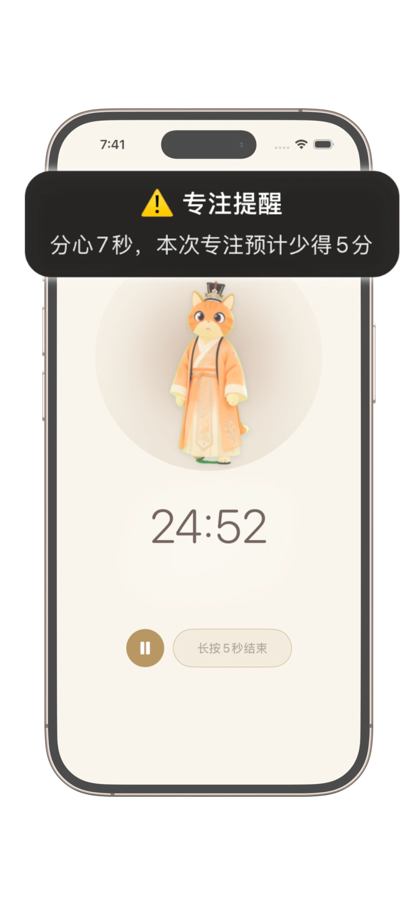

沉浸式专注空间
专为无干扰专注设计的极简界面，无论是番茄钟计时还是自由专注，都温和又高效。

最治愈的番茄钟，记录专注时光、解锁奖励、养成专注习惯 —— 有软萌猫咪伙伴一路陪伴。
从此告别分心，开启专注之旅
喵时计陪你培养专注、追踪进度，始终保持前进的动力。
专为无干扰专注设计的极简界面，无论是番茄钟计时还是自由专注，都温和又高效。

学霸模式温柔隔绝干扰，帮你守护核心任务，专注不被打断。

记录专注连签、总时长与成长轨迹，让每天的专注都变成实实在在的进步。

和温柔的猫咪伙伴一起养成习惯，只给鼓励，没有压力。

极简东方美学主题，精心打造，帮你营造沉静专注的氛围。
番茄钟通过「专注段 + 短休息」的结构化节奏帮你保持专注，提升效率、减轻用脑疲劳，更容易进入并维持深度工作状态。
喵时计面向学生、创作者和容易分心的用户，以简洁界面、灵活计时和温和反馈，支持深度专注、习惯养成和 ADHD 友好式工作流。
不堆功能、不制造压力。喵时计只保留必要功能，提供清爽的专注空间，可选主题与软萌伙伴陪伴，让专注更轻松。
听听喵时计用户的真实使用感受～
"喵时计也太好用了！大人小孩都适配——又萌又实用，每天都能进步一点点。对提升专注力超有帮助，长期用下来，真的能成为更好的自己。"
"太可爱了！超喜欢和猫咪伙伴的互动感～"
"天呐，也太萌了！超爱这些中式风格的主题。"
在上一份 SaaS 行业工作中，我深陷 100 多个群聊和不停歇的 AI 提醒中无法自拔。我能清晰地感觉到，自己深度思考的能力正在一天天衰退。喵时计 的诞生，源于我自身的挣扎——我想从数字噪音中，夺回属于自己的大脑。
喵时计是一款极简番茄钟应用，助你保持专注、减少分心、养成稳定的工作与学习习惯。
适合。喵时计注重简洁与平静，有助于减轻 overwhelm，为 ADHD 用户提供结构化的专注时段支持。
可以。适合学习、深度工作和日常效率习惯。
会。你可以查看专注会话、统计时长，并随时间养成稳定习惯。
核心功能免费使用，高级功能为可选付费。
下载喵时计，每次专注一小段，慢慢提升自律力。
深受追求专注效率的用户喜爱！
收获全球用户的喜爱，现在就开启你的专注之旅吧！